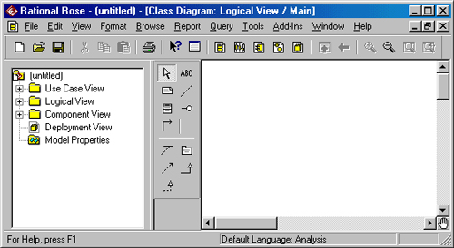
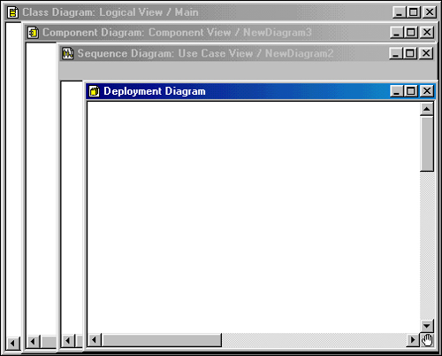
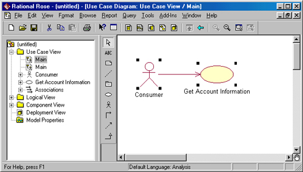
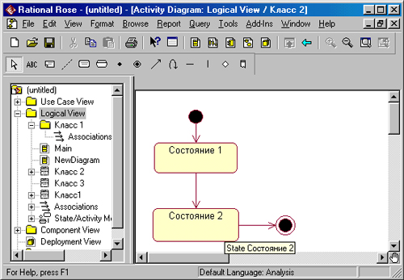
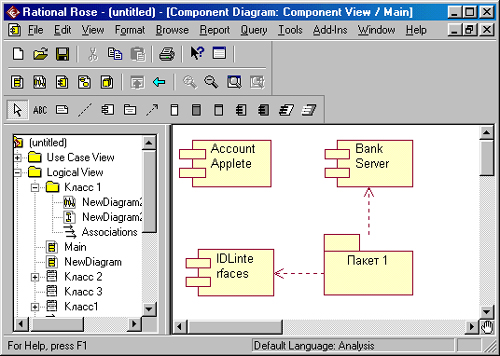
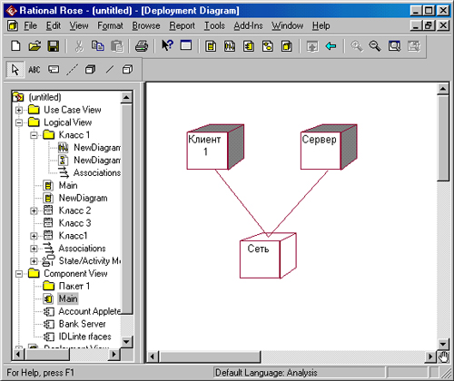

Появление на рынке программных продуктов первых CASE-средств (Computer Aided Software Engineering) ознаменовало новый этап развития программной инженерии, характерными особенностями которого являются существенное сокращение сроков разработки программных проектов, реализация проектов группой программистов и ориентация на визуальные средства специфицирования компонентов программного обеспечения.
Классической областью применения этих средств стали приложения баз данных, особенно те из них, которые требовали серьезных усилий при разработке своих концептуальных схем. Поддержка возможности автоматической генерации программного кода на основе предварительно разработанной концептуальной схемы оказалась настолько конструктивной, что стимулировала появление более двух десятков CASE-средств различных фирм.
Как уже отмечалось в части I книги, начальный этап развития CASE-тех-нологий характеризовался тем, что разные фирмы предлагали свои собственные средства визуального представления концептуальных средств. Зачастую выбор того или иного CASE-средства разработчиками определялся простотой нотации поддерживаемого средством языка представления схем и диаграмм. Появление первых стандартов в этой области лишь на какое-то время стабилизировало ситуацию. Однако острейшая конкуренция среди фирм-производителей программного обеспечения требовала от CASE-средств реализации объектно-ориентированной технологии разработки программ и поддержки широкого диапазона языков программирования и конкретных баз данных.
Среди всех фирм-производителей CASE-средств именно компания Rational Software Coip. одна из первых осознала стратегическую перспективность развития объектно-ориентированных технологий анализа и проектирования программных систем. Эта компания выступила инициатором унификации языка визуального моделирования в рамках консорциума OMG, что, в конечном итоге, привело к появлению первых версий языка UML. И эта же компания первой разработала инструментальное объектно-ориентированное CASE-средство, в котором был реализован язык UML как базовая нотация визуального моделирования.
Примечание
Среди причин, сдерживающих применение CASE-средств и определяющих контраст их популярности среди западных и отечественных разработчиков программ, следует отметить, в первую очередь, масштабность проектов и различие в технологиях создания программ. G одной стороны, необходимость автоматизации анализа и проектирования программных систем на базе CASE-тех-нологии начинает осознаваться только тогда, когда проект является достаточно сложным и масштабным. В противном случае для написания программ вполне достаточно обычных инструментов разработчика. С другой стороны, реализация масштабных проектов под силу группе программистов, а обеспечение групповой работы над проектом требует дополнительных средств для обеспечения совместимости его составных частей.
12.1. Общая характеристика CASE-средства Rational Rose 98/2000
CASE-средство Rational Rose со времени своего появления претерпело серьезную эволюцию и превратилось в современное и мощное средство анализа, моделирования и разработки программных систем. Именно в Rational Rose 98/2000 язык UML стал базовой технологией визуализации и разработки программ, что определило популярность и стратегическую перспективность этого инструментария.
В рамках Rational Rose существуют различные программные инструментарии, отличающиеся между собой диапазоном реализованных возможностей. Базовым средством в настоящее время остается Rational Rose 98, которое существует в четырех основных модификациях:
Наиболее полными возможностями обладает первая из указанных модификаций этого средства. Из этих возможностей можно отметить: реализацию UML версии 1.0, генерацию кодов на различных языках программирования (Java, C++, VisualBasic, PowerBuilder), обратную генерацию диаграмм (реинжиниринга) на основе программного кода и выпуск проектной документации.
Следующей версией стало средство Rational Rose 98i, которое также выпускается в этих же четырех модификациях. Эта версия дополнительно позволяет генерировать программный код стандарта MS Visual C++, обеспечивает документирование проекта в формате HTML для Web-публикации и поддерживает интеграцию с другими инструментариями объектно-ориентированной разработки программ, базами данных и с компонентами MS Office 2000.
Последней из версий на момент написания книги является Rational Rose 2000, возможности которой аккумулируют практически все современные достижения в области информационных технологий:
Уже этого перечня основных особенностей может оказаться достаточно, чтобы сделать вывод о достижении совершенно нового уровня реализации CASE-технологий, когда само инструментальное средство становится не только рабочим инструментом, но и своеобразной базой данных для практически всех современных объектных стандартов и компонентных интерфейсов.
Примечание
Конечно, рассмотреть в одной главе возможности такого средства, как Rational Rose 2000, просто невозможно, и автор не ставил перед собой такую задачу. Цель нашего знакомства с этим инструментарием — осветить основные особенности реализации языка UML на уровне разработки отдельных диаграмм. Поэтому далее описываются лишь основные правила и рекомендации, необходимые для разработки визуальных моделей в форме канонических диаграмм языка UML, реализованные уже в Rational Rose 98 и, соответственно, в Rational Rose 98J/2000.
12.2. Особенности рабочего интерфейса Rational Rose
В CASE-средстве Rational Rose реализованы общепринятые стандарты на рабочий интерфейс программы, подобно известным средам визуального программирования. После установки Rational Rose на компьютер пользователя, что практически не вызывает трудностей даже у начинающих, запуск этой программы в среде MS Windows 95/98 приводит к появлению на экране рабочего интерфейса (рис. 12.1).
Рис. 12.1. Общий вид рабочего интерфейса программы Rational Rose
Рабочий интерфейс Rational Rose состоит из различных элементов, основными из которых являются:
Рассмотрим кратко назначение и основные функции каждого из этих элементов.
Главное меню программы выполнено в общепринятом стандарте и имеет следующий вид (рис. 12.2).
Отдельные пункты меню, назначение которых понятно из их названий, объединяют сходные операции, относящиеся ко всему проекту в целом. Некоторые из пунктов меню содержат хорошо знакомые функции (открытие проекта, вывод печать диаграмм, копирование в буфер и вставка из буфера различных элементов диаграмм). Другие настолько специфичны, что могут потребовать дополнительных усилий на изучение (опции генерации программного кода, проверка согласованности моделей, подключение дополнительных модулей).

Рис. 12.2. Внешний вид главного меню программы
Стандартная панель инструментов
Стандартная панель инструментов располагается ниже главного меню программы и имеет следующий вид (рис. 12.3). Некоторые из инструментов недоступны (новый проект не имеет никаких элементов). Стандартная панель инструментов обеспечивает быстрый доступ к тем командам меню, которые выполняются разработчиками наиболее часто.
Рис. 12.3. Внешний вид стандартной панели инструментов
Пользователь может настроить внешний вид этой панели по своему усмотрению. Для этого необходимо выбрать пункт меню Tools -> Options (Инструменты -> Параметры) и открыть вкладку Toolbars (Панели инструментов). Этим способом можно показать или скрыть различные кнопки инструментов, а также изменить их размер.
Примечание
Следует заметить, что внешний вид панели инструментов определяется не только выбором и не только видом разрабатываемой диаграммы, но и выбором графической нотации для изображения самих элементов этих диаграмм. В Rational Rose реализованы три таких нотации: UML, ОМТ и Booch. Речь идет о том, что одна и та же диаграмма может быть представлена различным образом, для этого достаточно выбрать желаемое представление через пункт меню View (Вид). При этом никаких дополнительных действий выполнять не требуется — диаграмма преобразуется в выбранную нотацию автоматически. Однако, рассматривая Rational Rose в контексте только языка UML, мы оставим без внимания особенности двух других нотаций, которые отражают эволюционный аспект этого средства.
Окно браузера по умолчанию располагается в левой части рабочего интерфейса под стандартной панелью инструментов (рис. 12.4).
Браузер организует представления модели в виде иерархической структуры, которая упрощает навигацию и позволяет отыскать любой элемент модели в проекте. При этом любой элемент, который разработчик добавляет в модель, сразу отображается в окне браузера. Соответственно, выбрав элемент в окне браузера, мы можем его визуализировать в окне диаграммы или изменить его спецификацию. Браузер позволяет также организовывать элементы модели в пакеты и перемещать элементы между различными представлениями модели. При желании окно браузера можно расположить в другом месте рабочего интерфейса либо скрыть вовсе, используя для этого пункт меню View (Вид). Можно также изменить размеры браузера, переместив мышью границу его внешней рамки.

Рис. 12.4. Внешний вид браузера
Специальная панель инструментов
Специальная панель инструментов располагается между окном браузера и окном диаграммы в средней части рабочего интерфейса. По умолчанию предлагается панель инструментов для построения диаграммы классов модели (рис. 12.5).

Рис. 12.5. Внешний вид специальной панели инструментов для диаграммы классов
Расположение специальной панели инструментов можно изменять, переместив рамку панели в нужное место. Можно настраивать и состав панели, добавляя или удаляя отдельные кнопки, соответствующие тем или иным инструментам. Назначения кнопок можно узнать из всплывающих подсказок, появляющихся после задержки указателя мыши над соответствующей кнопкой.
Окно диаграммы является основной рабочей областью ее интерфейса, в которой визуализируются различные представления модели проекта. По умолчанию окно диаграммы располагается в правой части рабочего интерфейса, однако его расположение и размеры также можно изменить. При разработке нового проекта, если не был использован мастер проектов, окно диаграммы представляет собой чистую область, не содержащую никаких элементов модели (рис. 12.6).
Название диаграммы, которая располагается в данном окне, указывается в строке заголовка программы (самая верхняя строка программы) или, если окно не развернуто во весь экран, в строке заголовка окна диаграммы. Одновременно в окне диаграммы могут присутствовать несколько диаграмм, однако активной может быть только одна из них. Например, на рис. 12.6 активной является диаграмма развертывания, хотя имеются и другие диаграммы. Переключение между диаграммами можно осуществить выбором нужного представления на стандартной панели инструментов либо через пункт меню Window (Окно). При активизации отдельного вида диаграммы изменяется внешний вид специальной панели инструментов, которая настраивается под конкретный вид диаграммы.
Рис. 12.6. Внешний вид окна диаграмм с различными видами представлений модели
Окно документации по умолчанию может не присутствовать на экране. В этом случае оно может быть активизировано через пункт меню View -> Documentation (Вид->Документация), после чего появится ниже браузера (рис. 12.7).
Окно документации, как следует из его названия, предназначено для документирования элементов представления модели. В него можно записывать самую различную информацию, и что важно — на русском языке. Эта информация в последующем преобразуется в комментарии и никак не влияет на логику выполнения программного кода.
В окне документации активизируется та информация, которая относится к отдельному выделенному элементу диаграммы. При этом выделить элемент можно либо в окне браузера, либо в окне диаграммы. При добавлении нового элемента на диаграмму (например, класса) автоматически генерируется документация к нему, которая является пустой (No documentation). В последующем разработчик самостоятельно вносит необходимую пояснительную информацию, которая запоминается и может быть изменена в ходе работы над проектом.
Так же, как и для других окон рабочего интерфейса, можно изменять размеры и положение окна документации.

Рис. 12.7. Внешний вид окна документации
Окно журнала (Log) предназначено для автоматической записи различной служебной информации, образующейся в ходе работы с программой. В журнале фиксируется время и характер выполняемых разработчиком действий, таких как обновление модели, настройка меню и панелей инструментов, а также сообщений об ошибках, возникающих при генерации программного кода.
Окно журнала всегда присутствует на рабочем интерфейсе в области окна диаграммы (рис. 12.8). Однако оно может быть закрыто другими окнами с диаграммами или быть свернутым. Активизировать окно журнала можно через меню Window->Log (Окно->Журнал). В этом случае оно изображается поверх других окон в правой области рабочего интерфейса. Полностью удалить это окно нельзя, его можно только минимизировать.

Рис. 12.8. Внешний вид окна журнала
12.3. Начало работы над проектом в среде Rational Rose
Из всех рассмотренных видов канонических диаграмм в среде Rational Rose 98/98i не поддерживается только диаграмма деятельности. Общая последовательность работы над проектом аналогична последовательности рассмотрения канонических диаграмм в книге. Исходным шагом разработки нового проекта является создание отдельных моделей или представлений в контексте построения канонических диаграмм.
Для нового проекта можно воспользоваться мастером типовых проектов (если он установлен в данной конфигурации). Мастер типовых проектов доступен из меню File-»New (Файл^Создать). Если мастер недоступен, то появляется рабочий интерфейс программы с чистым окном диаграммы.
Если имеется готовый проект (файл с расширением mdl — модель), то его можно открыть для последующей модификации через меню FiIe-»Open (Файл->Открыть). В этом случае программа загрузит существующий проект со всеми имеющимися в нем диаграммами, спецификациями и документацией.
По окончании сеанса работы над проектом выполненную работу необходимо сохранить в файле проекта с расширением mdl. Это можно сделать через меню File-»Save (Файл->Сохранить) или File-»Save As (Файл-»Сохранить как). При этом вся информация о проекте, включая диаграммы и спецификации элементов, будет сохранена в одном файле.
Как и другие программы, Rational Rose позволяет настраивать глобальные параметры среды, такие как выбор шрифтов и цвета для представления различных элементов модели. Настройка шрифтов производится через меню Tools-»Options (Инструменты-»Параметры). Характерной особенностью среды является возможность работы с символами кириллицы. Однако следует заметить, что при спецификации элементов модели с последующей генерацией текста программного кода нужно сразу записывать имена и свойства элементов символами того языка, который поддерживается соответствующим языком программирования.
Для изменения цвета линий необходимо воспользоваться пунктом меню Edit-»Diagram Object Properties-»Line Color (Правка-»Свойства объекта диа-граммы-»Цвет линии). В этом случае предлагается специальная цветовая палитра, на которой можно выбрать подходящий цвет для линий на диаграммах.
Общий процесс работы над проектом заключается в добавлении на диаграммы соответствующих графических элементов, установлении отношений между этими элементами, их спецификации и документировании. После проверки правильности модели и согласованности спецификаций ее элементов можно сгенерировать текст программного кода на одном из выбранных языков программирования. Конечно, этот текст можно доработать в соответствующей среде программирования и получить исполнимые модули программ, ориентированные на работу в определенной операционной среде и вычислительной платформе.
Процесс добавления графических элементов на диаграммы аналогичен реализованному в популярных средах визуального программирования. При этом следует предостеречь от неосторожного добавления элементов на диаграммы, поскольку каждый добавляемый элемент заносится в браузер. Последующее удаление элемента с диаграммы автоматически не удаляет его из браузера, и необходимо предпринять дополнительные меры для удаления ненужного элемента из модели проекта.
12.4. Разработка диаграммы вариантов использования в среде Rational Rose
Работа над проектом в среде Rational Rose начинается с общего анализа проблемы и построения диаграммы вариантов использования, который отражает функциональное назначение проектируемой программной системы. Общие рекомендации по построению диаграммы вариантов использования были рассмотрены в главе 4.
Для разработки диаграммы вариантов использования в среде Rational Rose необходимо активизировать соответствующую диаграмму в окне диаграммы. Это можно сделать различными способами:
При этом появляется специальная панель инструментов, содержащая графические примитивы, характерные для разработки диаграммы вариантов использования (рис. 12.9).

Рис. 12.9. Внешний вид специальной панели инструментов для диаграммы вариантов использования
На этой панели инструментов присутствуют все необходимые для построения диаграммы вариантов использования элементы. Назначение отдельных кнопок панели можно узнать из всплывающих подсказок. Для добавления элемента нужно нажать кнопку с изображением соответствующего примитива, после чего щелкнуть мышью на свободном месте диаграммы. На диаграмме появится изображение выбранного элемента с маркерами изменения его геометрических размеров и предложенным средой именем по умолчанию.
Имя элемента может быть изменено разработчиком либо сразу после размещения элемента на диаграмме, либо в ходе последующей работы над проектом. По щелчку правой кнопкой мыши на выбранном элементе вызывается контекстное меню элемента, среди опций которого имеется пункт Open Specification (Открыть спецификацию). В этом случае активизируется диалоговое окно со специальными вкладками, в поля которых можно занести всю информацию по данному элементу.
Пример построенной таким способом диаграммы вариантов использования может иметь следующий вид (рис. 12.10).
Рис. 12.10. Пример разработки диаграммы вариантов использования в среде Rational Rose
Диаграмма вариантов использования является высокоуровневым представлением модели, поэтому она не должна содержать слишком много вариантов использования и актеров. В последующем построенная диаграмма может быть изменена добавлением новых элементов, таких как варианты использования и актеров, или их удалением. Для удаления элемента не только из диаграммы, но и из модели в целом необходимо выделить удаляемый элемент на диаграмме и воспользоваться пунктом меню Edit-»DeIete from Model.
При работе со связями на диаграмме вариантов использования следует помнить о назначении соответствующих связей. Речь идет о том, что если для двух элементов выбранный вид связи не является допустимым, то среда сообщит об этом разработчику, и такая связь не будет добавлена на диаграмму.
За более подробной информацией по построению диаграмм вариантов использования в среде Rational Rose можно обратиться к специальной литературе [3].
12.5. Разработка диаграммы классов в среде Rational Rose
Диаграмма классов является основным логическим представлением модели и содержит самую подробную информацию о внутреннем устройстве объектно-ориентированной программной системы. Активизировать диаграмму классов в окне диаграммы можно также несколькими способами:
После активизации диаграммы классов специальная панель инструментов приобретет вид, показанный на рис. 12.5. Добавление и удаление элементов происходит аналогично, однако у каждого класса имеется обширная спецификация, содержащая информацию о его атрибутах и операциях. При этом видимость атрибутов и операций изображается в форме специальных пиктограмм или украшений (рис. 12.11).
Используемые пиктограммы для видимости изображаются перед именем соответствующего атрибута или операции и имеют следующий смысл:
Рис. 12.11. Пример графического изображения диаграммы классов в среде Rational Rose
Аналогичные пиктограммы применяются для обозначения видимости операций класса. Так, операция_1() класса 1 является защищенной и поэтому доступ к ней разрешен только из самого класса 1 или из его потомков. Опе-рация_2() этого же класса является закрытой и поэтому, кроме класса 1, она никакому другому классу не доступна.
Для отдельных атрибутов выделенного класса можно задать тип данных и начальные значения атрибута, а также назначить стереотип через пункт контекстного меню Open Specification (Открыть спецификацию). При этом предлагается выбор соответствующих значений из раскрывающегося списка. Для отдельных операций выбранного класса можно задать тип возвращаемого результата (возвращаемого класса), добавить аргументы к операции, назначить для нее стереотип, а также определить протокол и размер, задать исключительные ситуации и целый ряд дополнительных свойств. Эти свойства операции доступны через пункт контекстного меню Open Specification (Открыть спецификацию) и вкладку Operations (Операции). При двойном щелчке на выбранной операции открывается дополнительное окно с вкладками, соответствующими отдельным из указанных ранее свойств.
Добавление на диаграмму классов отношений (связей) между классами типа ассоциаций, зависимостей, агрегаций и обобщений выполняется следующим образом. На специальной панели инструментов выбирается требуемый тип связи щелчком по кнопке с соответствующим изображением. Если связь направленная, то на диаграмме классов надо выделить первый элемент связи (источник, от которого исходит связь) и, не отпуская нажатую левую кнопку мыши, переместить ее указатель ко второму элементу связи (приемник, к которому направлена связь). После перемещения ко второму элементу кнопку мыши следует отпустить, а на диаграмму классов будет добавлена новая связь.
Если же связь ненаправленная (двунаправленная), то порядок выбора классов для этой связи произвольный. Для связей можно определить кратность каждого из концов связи, задать имя и стереотип, использовать ограничения и роли, а также некоторые другие свойства. Доступ к спецификации связи можно получить после выделения связи на диаграмме и вызова контекстного меню щелчком правой кнопки мыши.
12.6. Разработка диаграммы состояний в среде Rational Rose
Переходя к рассмотрению диаграммы состояний, следует отметить, что в среде Rational Rose этот тип диаграмм относится только к отдельному классу. Для того чтобы построить диаграмму состояний для класса, его вначале необходимо создать и специфицировать. После этого выделить на диаграмме классов или в браузере. Начать построение диаграммы состояний для выбранного класса можно одним из следующих способов:
После выполнения указанных действий в окне диаграммы появится чистое изображение для размещения элементов этой диаграммы, выбираемых с помощью специальной панели инструментов (рис. 12.12).

Рис. 12.12. Внешний вид специальной панели инструментов для диаграммы состояний
Как видно из этого рисунка, в среде отсутствуют некоторые из рассмотренных ранее элементов диаграммы состояний. Процесс добавления и удаления состояний и переходов на диаграмму состояний аналогичен этим же действиям с элементами других диаграмм. Ниже приводится пример построенной диаграммы состояний (рис. 12.13).
После добавления состояния или перехода на диаграмму состояний можно открыть спецификацию выбранных элементов и определить их специальные свойства, доступные на соответствующих вкладках. При необходимости можно визуализировать вложенность состояний и подключить историю отдельных состояний.
Рис. 12.13. Пример графического изображения диаграммы состояний в среде Rational Rose
12.7. Разработка диаграммы последовательности в среде Rational Rose
Диаграмма последовательности может быть активизирована одним из следующих способов:
Щелкнуть на кнопке с изображением диаграммы последовательности на стандартной панели инструментов.
Через пункт меню Browse - Interaction Diagram (Браузер - Диаграмма взаимодействия).
После выполнения указанных действий в окне диаграммы появится чистое изображение для размещения элементов диаграммы последовательности, выбираемых с помощью специальной панели инструментов (рис. 12.14).

Рис. 12.14. Внешний вид специальной панели инструментов для диаграммы последовательности
Построение диаграммы последовательности сводится к добавлению или удалению отдельных объектов и сообщений, а также к их спецификации. Доступ к спецификации этих элементов организован либо через контекстное меню, либо через пункт меню Browse - Specification (Браузер - Спецификация). При добавлении сообщений на диаграмму последовательности они получают по умолчанию свой номер в последовательности. Ниже приводится пример построенной диаграммы состояний (рис. 12.15).

Рис. 12.15. Пример графического изображения диаграммы последовательности в окне диаграммы среды Rational Rose
При необходимости можно изменить порядок следования сообщений и их спецификацию, а также сопоставить сообщения с операциями. Дополнительно можно устанавливать синхронизацию сообщений, связать с сообщением примечание (комментарий) с помощью скриптов.
12.8. Разработка диаграммы кооперации в среде Rational Rose
Диаграмма кооперации является другим способом визуализации взаимодействия в модели и, как и диаграмма последовательности, оперирует объектами и сообщениями. Особенность работы в среде Rational Rose заключается в том, что этот вид канонической диаграммы создается автоматически после построения диаграммы последовательности и нажатия клавиши <F5>. С помощью этой же клавиши осуществляется переключение между диаграммами последовательности и кооперации.
После того как диаграмма кооперации активизирована, специальная панель инструментов приобретает следующий вид (рис. 12.16).

Рис. 12.16. Внешний вид специальной панели инструментов для диаграммы кооперации
На этой панели имеются кнопки с пиктограммами объектов и различных типов сообщений. Работа с диаграммой кооперации состоит в добавлении или удалении объектов и сообщений, а также их специфицировании. При этом изменения, вносимые в диаграмму кооперации, автоматически вносятся и в диаграмму последовательности, что можно увидеть, активизировав последнюю нажатием клавиши <F5>.
Ниже представлен пример диаграммы кооперации (рис. 12.17), которая была автоматически сгенерирована средой после построения диаграммы последовательности (см. рис. 12.15).

Рис. 12.17. Пример графического изображения диаграммы кооперации, соответствующей построенной ранее диаграмме последовательности
Как и для диаграммы последовательности, для диаграммы кооперации можно изменять порядок следования сообщений, добавлять потоки данных, определять устойчивость объектов на основе активизации соответствующих спецификаций.
12.9. Разработка диаграммы компонентов в среде Rational Rose
Диаграмма компонентов является частью физического представления модели и играет важную роль в процессе ООАП. Активизация диаграммы компонентов может быть выполнена одним из следующих способов:
После активизации диаграммы компонентов специальная панель инструментов приобретет следующий вид (рис. 12.18).

Рис. 12.18. Внешний вид специальной панели инструментов для диаграммы компонентов
Добавление и удаление элементов происходит аналогично, однако для каждого компонента можно определить различные детали, такие как стереотип, язык программирования, декларации, классы. Работа с этими деталями компонентов осуществляется через спецификацию компонента, доступную после вызова контекстного меню.
Ниже приводится пример графического изображения элементов диаграммы компонентов (рис. 12.19).
При работе с диаграммой компонентов можно создавать пакеты и компоненты, изменять их спецификацию и зависимости между различными элементами диаграммы. При установлении реализации классов на компоненте можно выделить класс в браузере и перетащить его на нужный компонент диаграммы.
Рис. 12.19. Пример графического изображения диаграммы компонентов в среде Rational Rose
12.10. Разработка диаграммы развертывания в среде Rational Rose
Диаграмма развертывания является второй составной частью физического представления модели. Активизация диаграммы развертывания может быть выполнена одним из следующих способов:
После активизации диаграммы развертывания специальная панель инструментов приобретет следующий вид (рис. 12.20).

Рис. 12.20. Внешний вид специальной панели инструментов для диаграммы развертывания
Работа с диаграммой развертывания состоит в создании процессоров и устройств, их спецификации, установлении связей между ними, а также добавлении и спецификации процессов. Применительно к отдельным процессорам можно использовать стереотипы.
Ниже приводится пример графического изображения диаграммы развертывания (рис. 12.21).
Рис. 12.21. Пример графического изображения диаграммы развертывания в среде Rational Rose
Одним из наиболее мощных свойств среды Rational Rose является возможность генерации программного кода после построения модели. Как уже отмечалось ранее, возможность генерации текста программы на том или ином языке программирования зависит от установленной версии Rational Rose.
Общая последовательность действий, которые необходимо выполнить для этого, состоит из шести этапов:
Особенности выполнения каждого из этапов могут изменяться в зависимости от выбора языка. В среде Rational Rose предусмотрено задание достаточно большого числа свойств, характеризующих как отдельные классы, так и проект в целом. Однако описание этих свойств выходит за пределы настоящей книги.
| Каталог | Индекс раздела | Оглавление |